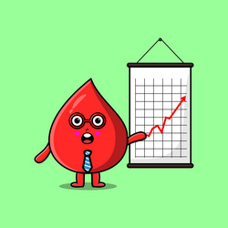

WHY WE HAVE TO DONATE BLOOD
Donating blood regularly has proved beneficial not only for the recipient but also the donor. It is helpful for the vital organs, and it reduces risk for chronic diseases such as cancer and stroke. For certain treatments like chemotherapy, blood is required on a daily basis, whereas victims of accident may require up to 100 units of blood transfusion. In India, blood shortage is more than 2 million pint and counting.
